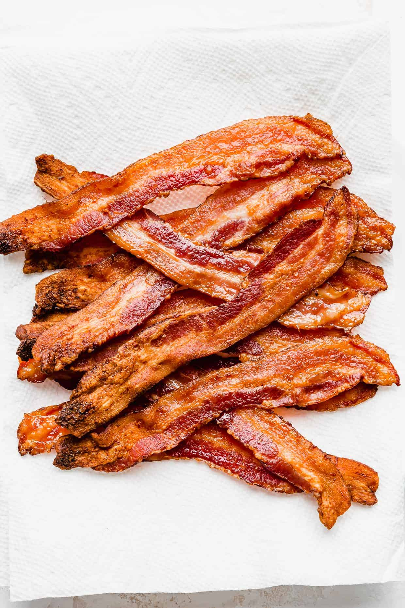
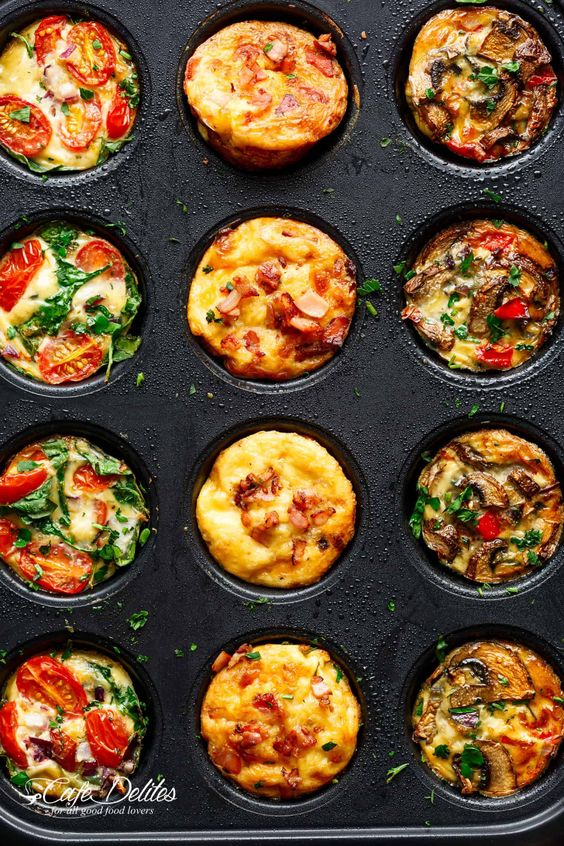
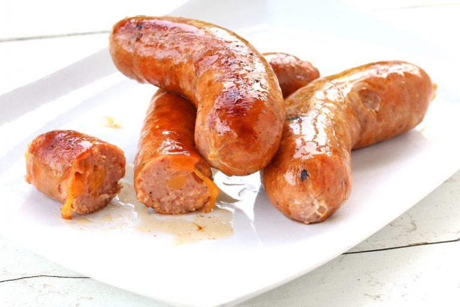
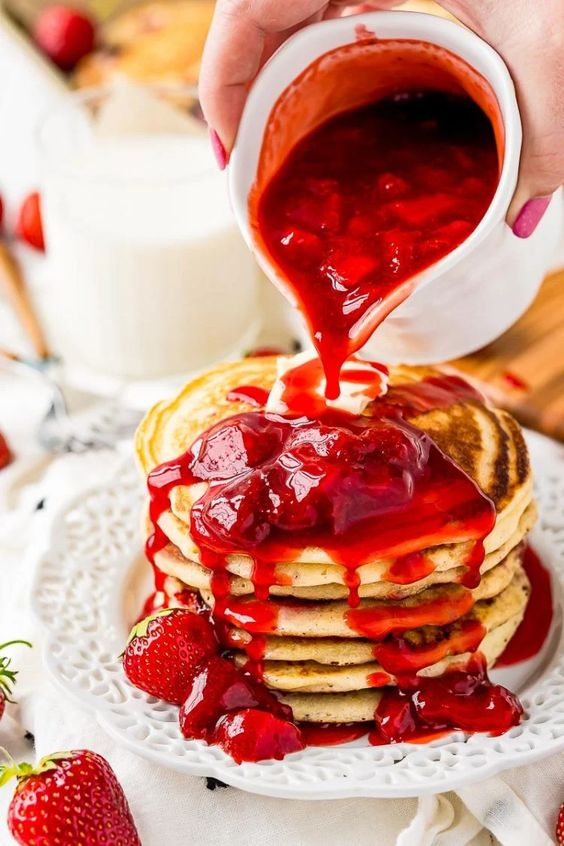

About pancake
A pancake is a flat cake, often thin and round, prepared from a starch-based batter that may contain eggs, milk and butter and cooked on a hot surface such as a griddle or frying pan, often frying with oil or butter. It is a type of batter bread. The pancake's shape and structure varies worldwide. In the United Kingdom, pancakes are often unleavened and resemble a crêpe. In North America, a leavening agent is used (typically baking powder) creating a thick fluffy pancake. A crêpe is a thin Breton pancake of French origin cooked on one or both sides in a special pan or crepe maker to achieve a lacelike network of fine bubbles. A well-known variation originating from southeast Europe is a palačinke, a thin moist pancake fried on both sides and filled with jam, cream cheese, chocolate, or ground walnuts, but many other fillings—sweet or savoury—can also be used.
.
Origin of pancake
600 BC - The first recorded mention of pancakes dates back to ancient Greece and comes from a poet who described warm pancakes in one of his writings. 1100 AD - Shrove Tuesday (Pancake Day) becomes a traditional way to use up dairy products before lent - the pancake breakfast is born. Pancakes have been around for centuries and are a staple in many cultures. Experts (pancakes experts?) believe that people enjoyed pancakes as far back as 30,000 years ago during the Stone Age. In fact, researchers found pancakes in the stomach of Ötzi the Iceman, famous human remains that date back more than 5,000 years! Actually, that’s kind of gross…
In ancient Greece and Rome, pancakes were made from wheat flour, olive oil, honey, and curdled milk. Ancient Greek poets Cratinus and Magnes wrote about pancakes in their poetry. Shakespeare even mentions them in his famous plays. During the English Renaissance, people flavored their pancakes with spices, rosewater, sherry, and apples.
People began using the word “pancake” during the 15th century, and the word became standard in 19th century America. Previously, people referred to them as Indian cakes, hoe cakes, johnnycakes, journey cakes, buckwheat cakes, griddle cakes, and flapjacks. Early American pancakes were made with buckwheat or cornmeal.
| Ingredients |
Measurements |
| Butter milk (or whole milk) |
2 cups |
| Eggs |
2 large eggs |
| Pure vanilla extract |
1 teeaspoon |
| Melted unsalted butter |
4 tablespoons |
| All-purpose flour, spooned and leveled |
2 ¼ cups |
| Granulated sugar |
¼ cup |
| Baking powder |
2 teaspoons |
| Baking soda |
1 teaspoon |
| Kosher salt |
1 teaspoon |
| Nonstick cooking spray |
|
How to Prepare:
- Step 1: In a medium bowl, mix your dry ingredients. This includes the all-purpose flour, sugar, baking powder, baking soda, and kosher salt. Set aside.
- Step 2: In a separate bowl, mix the wet ingredients: milk, eggs, vanilla extract, and melted butter. If you don't have butter, you could also use vegetable oil.
- Step 3: Add the wet ingredients to the bowl with the dry ingredients. Stir to combine until you stop seeing flour. Remember to not over mix, which makes the batter tough. Set aside. Tip: A few lumps in your batter will keep the pancakes tender.
- Step 4: Turn your stove to medium-high heat and place a large skillet or griddle on the burner. Tip: To test for temperature, sprinkle a few drops of water on the pan. You will know it's hot enough when the droplets bubble up and evaporate.
- Step 5: Grease the pan with cooking spray or a tablespoon of butter. This will prevent the pancakes from sticking to the pan.
- Step 6: With a ladle or a measuring cup, gently pour ⅓ to ½ cup of batter into the pan for each pancake. Use a spoon to spread and form the batter into a circle. Tip: This is the time to add pancake fillings, like bananas, blueberries, or chocolate chips.
- Step 7: Once bubbles begin to pop in the pancake's center, it's ready to be turned. Insert the entire spatula under the pancake's middle. Lift the pancake quickly about an inch off the pan's surface and flip it over. Tip: If you're making pancakes for a large crowd, place them on a wire rack over a baking sheet (to prevent sogginess), and keep pancakes in the oven on low heat (approximately 200 F to 225 F) until you're ready to serve.
What to Serve with Pancakes

Top those sweet, warm cakes with smoky and savory bacon, and you’ll have a meal to die for

Pair this egg muffins your flapjacks for the ultimate breakfast of champions! Hearty, healthy, and delicious, this meal is the best way to start your day.

There’s nothing like a plump and juicy sausage to counterbalance the sweetness of pancakes. It’s the perfect protein to round out your breakfast.

Fluffy pancakes and fluffy scrambled eggs make for an epic breakfast.

Strawberry syrup is a fantastic alternative to the classic maple. Its sweet and tart flavors add a heavenly twist to pancakes.